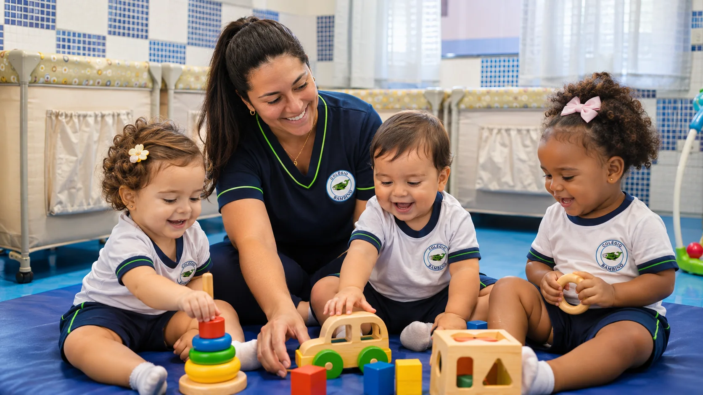
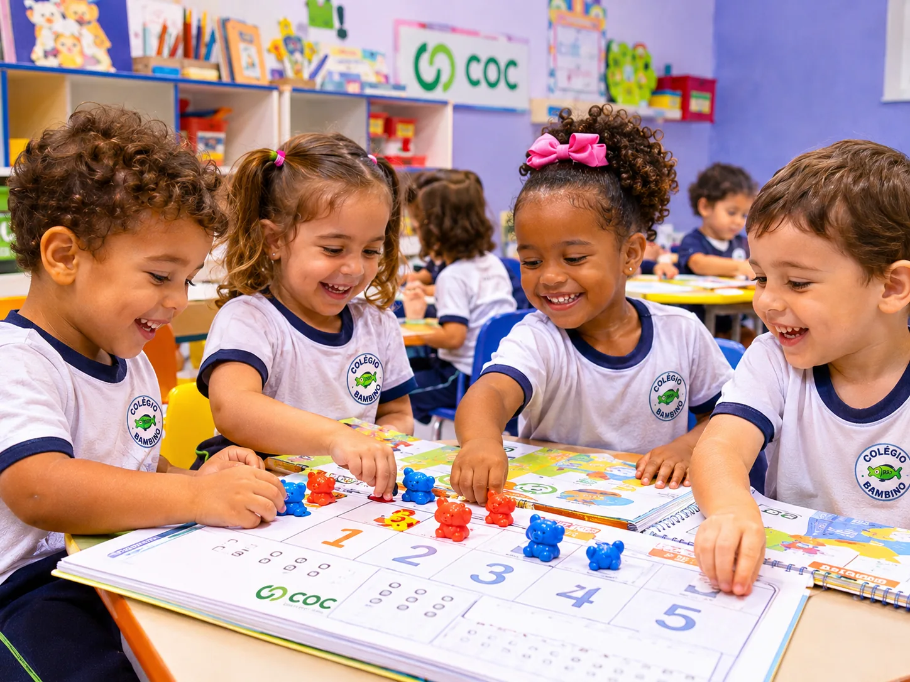
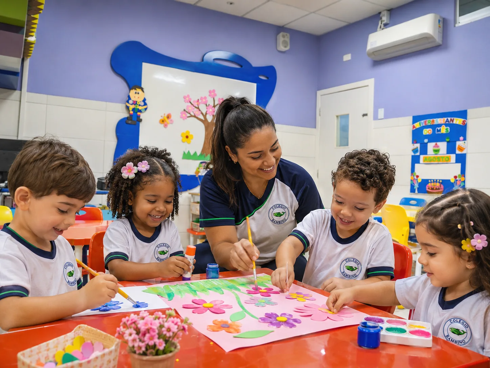
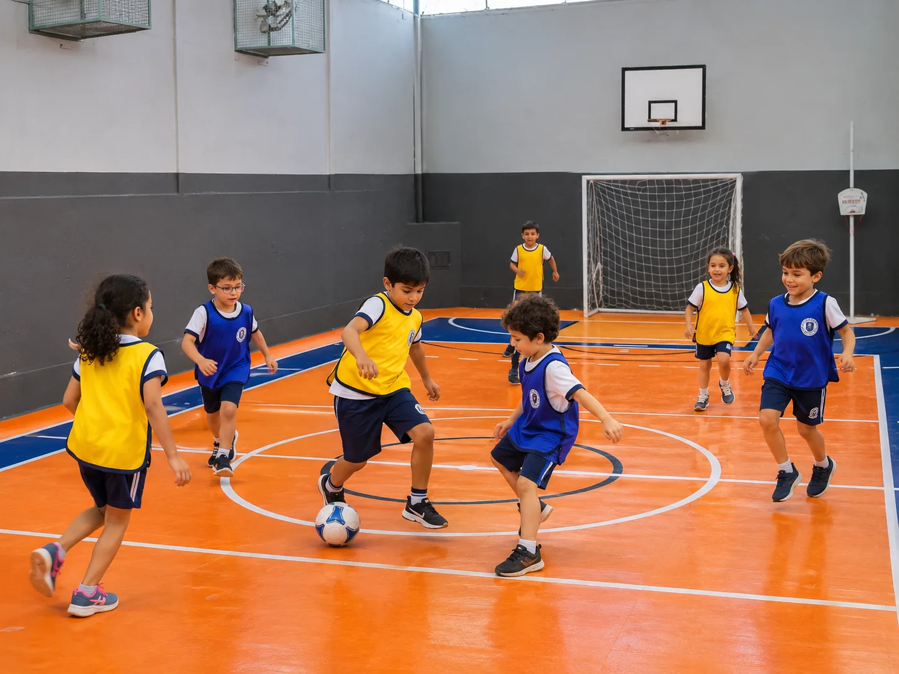
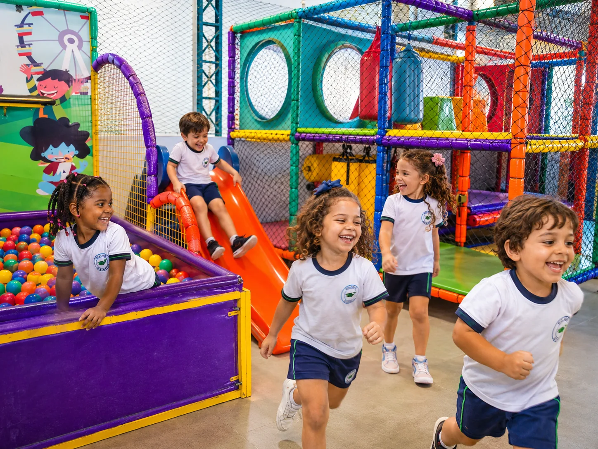

Berçário
Os primeiros vínculos são construídos com atenção, rotina e ambientes preparados para cuidar de seu bebê.
Saiba maisDo berçário ao Pré II, a experiência do Bambino + Perini acolhe sua família com atenção à infância, espaços preparados e aprendizagem apoiada pelo Sistema COC.
Venha conhecer os ambientes e conversar com nossa equipe.

 Uma história de educação que começa na infância.
Uma história de educação que começa na infância.Nossa trajetória começou em 1987. Hoje, Bambino + Perini celebram quatro décadas de educação, vínculos e descobertas. Venha conhecer de perto a escola que acompanha cada fase da infância.
Quatro décadas de história celebram a continuidade de uma proposta que valoriza cada etapa do desenvolvimento infantil.
Conheça nossa história ↗Do primeiro acolhimento às novas conquistas de autonomia, cada etapa reúne experiências adequadas ao momento de desenvolvimento da criança.
Os primeiros vínculos são construídos com atenção, rotina e ambientes preparados para cuidar de seu bebê.
Saiba maisBrincar, explorar, comunicar e conviver: novas experiências fortalecem a curiosidade e a autonomia.
Saiba mais
Histórias, jogos e descobertas ampliam a linguagem, o raciocínio e a convivência, sem apressar a infância.
Saiba maisNa Educação Infantil, cuidar, educar e brincar caminham juntos. Com o Sistema COC como apoio à proposta pedagógica, as crianças vivenciam situações que estimulam curiosidade, linguagem, movimento, criatividade e convivência, respeitando os diferentes ritmos de desenvolvimento.
Atividades e interações que dão sentido às descobertas.
Curiosidade e investigação para conhecer o mundo.
Atenção à linguagem, ao corpo, às emoções e à convivência.
Saiba mais sobre como a proposta acontece em cada turma durante sua visita.
Agende uma visita
Mais oportunidades de explorar, interagir, ouvir histórias, criar e fazer descobertas com experiências planejadas para cada fase. O COC apoia a proposta pedagógica sem substituir o brincar e o cuidado.
Conheça o Pré I e o Pré II ↗A experiência de 40 anos encontra o cuidado com os pequenos: ambientes dedicados à rotina de descanso, alimentação e higiene, com sistemas de câmeras e alarmes como parte da estrutura de segurança do colégio. Nossa equipe conversa com cada família sobre adaptação e necessidades do bebê.

Entre histórias, brincadeiras, músicas, artes e explorações, as crianças ampliam sua maneira de perceber, expressar e compreender o mundo. As interações e as experiências fazem parte da aprendizagem.


Cada ambiente conta uma parte da rotina escolar. Conheça nossos espaços, veja como são organizadas as experiências e converse com a equipe sobre o dia a dia das crianças.

Espaços organizados para experiências que valorizam a infância.
Aqui, você pode conhecer os ambientes, conversar com quem acompanha a rotina das crianças e entender como o Bambino transforma 40 anos de história em atenção a cada novo começo.
Clique em “Agende uma visita” para falar com nossa secretaria pelo WhatsApp. Nossa equipe orientará sobre o agendamento.
O Bambino atende do berçário ao Pré II. Nossa equipe orienta sobre a turma correspondente à idade da criança.
A proposta pedagógica do Bambino é apoiada pelo Sistema COC. Durante a visita, explicamos como o trabalho acontece em cada etapa.
Nossa equipe apresenta como esse processo é organizado e conversa com a família sobre as particularidades da criança.
A secretaria orienta sobre horários, períodos e condições de matrícula conforme a etapa de interesse.
Venha conhecer os espaços, conversar com nossa equipe e descobrir como o Bambino acompanha os primeiros anos da infância.